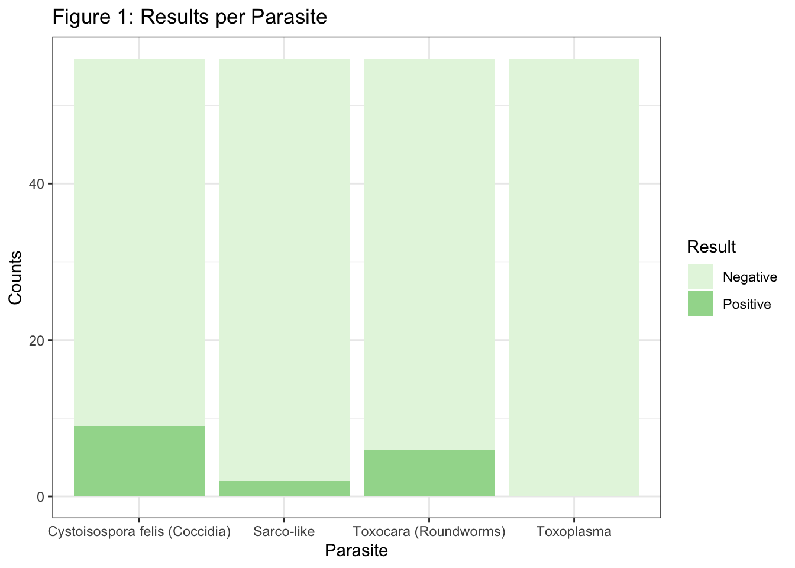
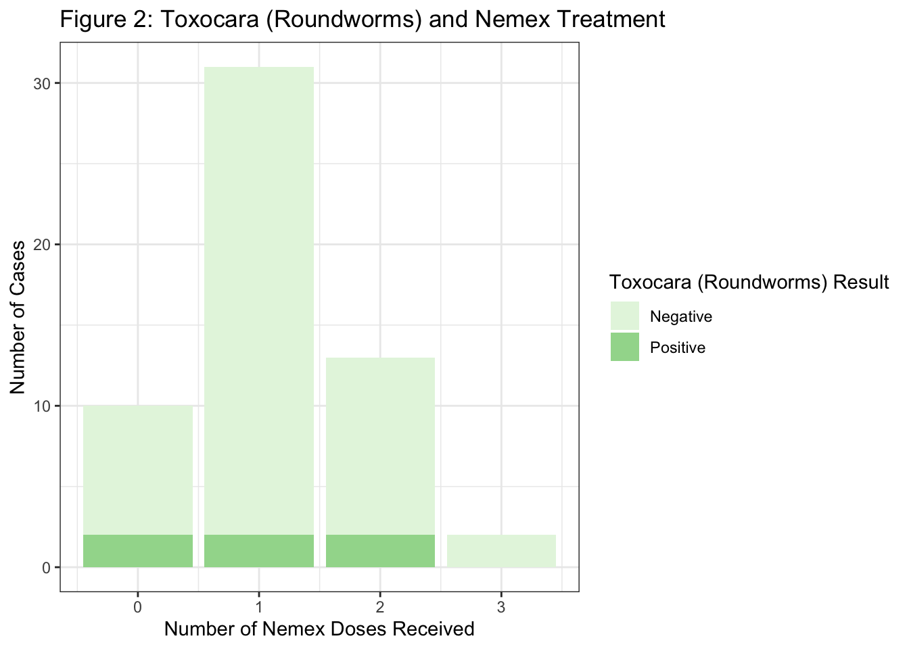
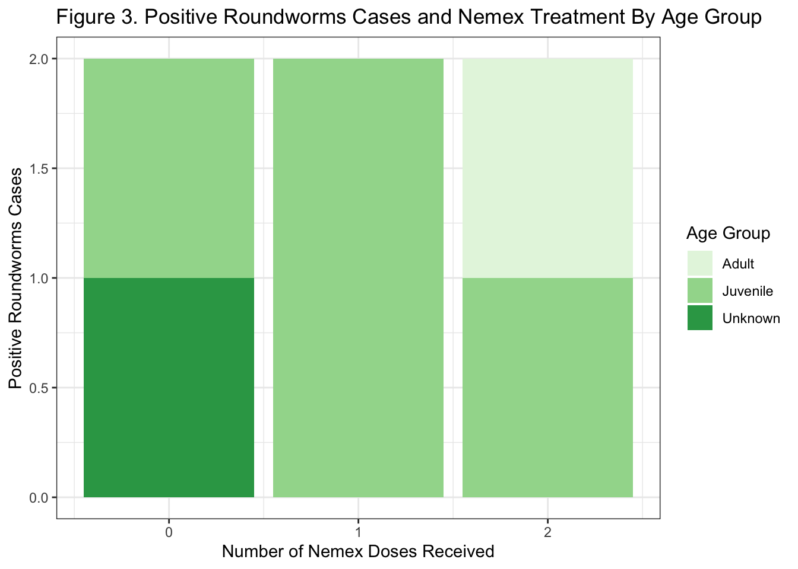

| Average Age (years) | Median Age (years) |
|---|---|
| 1.77327 | 1.097222 |
Deworming Protocol Analysis SCCAS
Background - The Study
Land To Sea is an extension of a previous research study investigating the presence of toxoplasma gondii in Monterey Bay. The study has been picked up again by grad students at UC Davis. Cats are the definitive host for toxoplasma gondii, which is shed via oocytes in their feces. The feces may be consumed directly or the oocytes can travel through the waterway to food sources, finding their way to various animals including otters and cows. The Land To Sea study is investigating the connections between these animals by looking at the waterway in conjunction with animals. The original study publication can be viewed here.
The lifecycle of toxoplasmosis is illustrated in Image 1 and Image 2.


The Santa Cruz County Animal Shelter (SCCAS) is involved in the study by providing fecal samples of cats that meet certain criteria. Samples must come from cats of eight weeks of age or older and have spent time outdoors. Feral/unsocial cats are more likely to have spent more time outdoors, so stray/found cats are preferred over those that were surrendered.
The fecal samples included in this sample were analyzed by the UC Davis lab via fecal flotation and microscopic analysis. Entirely separate from the Land To Sea study, the provided results were analyzed with the intention of evaluating the current SCCAS deworming protocol. The following is that analysis.
Background - Parasites
Testing
Each cat’s fecal float was analyzed for four things:
| Analysis | Description | Image |
|---|---|---|
| Cystoisospora felis (Coccidia) | Protozoan |  |
| Toxocara (Roundworms) | Nematode |  |
| Toxoplasma | Protozoan |  |
| Sarco-like | Sarcocystis-like sporocysts, no confirmed species |  |
Sarco-like is not a specific parasite so it was left out of this analysis. In the 56 cases analyzed here, none had toxoplasma so it was also left out of this analysis.
Relevant Dewormers
Nemex (pyrantel) is effective against roundworms and hookworms. Among the parasites tested for in this study, Nemex is only effective against toxocara (roundworms). This should be repeated every 2-3 weeks until 8-12 weeks of age.
Ponazuril is effective against coccidia. It should be given at 2-3 weeks of age and repeated once after 7-14 days.
| Dewormer | Effective Against (involved in this study) | SCCAS Intake Protocol |
|---|---|---|
| Nemex (pyrantel) | roundworms, hookworms | - age 2-16 weeks: give at intake, then two weeks after intake, repeated every 4 weeks until 16 weeks of age - >16 weeks: give at intake, then two weeks after intake |
| Ponazuril | coccidia | 2-12 weeks: give once at intake |
| Fenbendazole (panacur) | roundworms, hookworms, whipworms, some tapeworms, and Giardia | not used prophylactically |
Sample Demographics & Overview
This sample includes 56 cats from the Santa Cruz County Animal Shelter.
Age
The average age of the cats sampled was 1.77 years. The median age of the cats sampled was 1.10 years.
The adult age group was made up of cats over six months of age. The juvenile age group included cats between three and six months of age. Cats under three months were considered kittens. All ages were based on the cat’s age at the date and time of collection.
The sample included 43 adult cats (76.8%), 10 juvenile cats (17.9%), 3 cats of unknown age (5.4%), and 0 kittens (0.00%).
| Age Group | Total | Proportion |
|---|---|---|
| Adult (> 6 months) | 43 | 0.76785714 |
| Juvenile (3-6 months) | 10 | 0.17857143 |
| NA | 3 | 0.05357143 |

Spay/Neuter Status & Sex
Of the cats sampled, 62.5% were altered (spayed/neutered, “fixed”) (N = 35) while 26.8% were intact (N = 15). The sample also included 10.7% of cats with unknown spay/neuter status (N = 6).
| Spayed/Neutered (Fixed) or Intact | Total | Proportion |
|---|---|---|
| Fixed | 35 | 0.6250000 |
| Intact | 15 | 0.2678571 |
| Unknown | 6 | 0.1071429 |

The sample included 26 spayed females, 11 females, 11 neutered males, 4 males, and 4 unknown cats.
| sex | Total | Proportion |
|---|---|---|
| female | 11 | 0.19642857 |
| male | 4 | 0.07142857 |
| neutered_male | 11 | 0.19642857 |
| spayed_female | 26 | 0.46428571 |
| unknown | 4 | 0.07142857 |

Surrendered Status
The vast majority of the cats in the sample were not surrendered (76.8%, N = 43). These cats were typically stray. The remaining cats were surrendered to the animal shelter by an owner (23.2%, N = 13).
| surrendered | Total | Proportion |
|---|---|---|
| FALSE | 43 | 0.7678571 |
| TRUE | 13 | 0.2321429 |

Temperament
Of the 56 cats in the sample, 44 were classified as social temperament (78.6%), 10 as unsocial temperament (17.9%), and 2 with temperament unknown (3.6%).
| temperament | Total | Proportion |
|---|---|---|
| social | 44 | 0.78571429 |
| unknown | 2 | 0.03571429 |
| unsocial | 10 | 0.17857143 |

Health Status
Over half (62.5%) of the cats were classified as healthy (N = 35). The remaining cats were classified as sick (10.7%, N = 6) or other (26.8%, N = 15).
| health_status | Total | Proportion |
|---|---|---|
| healthy | 35 | 0.6250000 |
| other | 15 | 0.2678571 |
| sick | 6 | 0.1071429 |

Data Overview
56 cats were evaluated for each of the parasites, with 224 tests total (56*4). Of these, 17 of the tests were positive (7.59%). Of the 56 cats, 13 tested positive for one or more parasite (23.2%).
There are currently no cases positive for toxoplasma. The majority of positive test results are for Coccidia, followed by Roundworms. 16.1% of the cats tested positive for coccidia. 10.7% of the cats tested positive for roundworms. There were 17 total positive test results, though some of these results overlapped as they were from the same case. (Figure 1, Table 1)

| Parasite |
Results
|
||
|---|---|---|---|
| Positive N = 171 |
Negative N = 2071 |
Overall N = 2241 |
|
| Parasite Species | |||
| C. Felis (Coccidia) | 9 (16.1%) | 47 (83.9%) | 56 (100.0%) |
| Sarco-like | 2 (3.6%) | 54 (96.4%) | 56 (100.0%) |
| Toxocara (Roundworms) | 6 (10.7%) | 50 (89.3%) | 56 (100.0%) |
| Toxoplasma | 0 (0.0%) | 56 (100.0%) | 56 (100.0%) |
| 1 n (%) | |||
The data from roundworms and coccidia were analyzed further.
Roundworms
There were six cases positive for toxocara (10.7%). Of these, two had never received Nemex, two had received Nemex only once, and two had received Nemex two times. (Figure 2, Table 2)

| Characteristic |
Results
|
||
|---|---|---|---|
| Positive N = 61 |
Negative N = 501 |
Overall N = 561 |
|
| Number of Nemex Doses Received | |||
| 0 | 2 (20.0%) | 8 (80.0%) | 10 (100.0%) |
| 1 | 2 (6.5%) | 29 (93.5%) | 31 (100.0%) |
| 2 | 2 (15.4%) | 11 (84.6%) | 13 (100.0%) |
| 3 | 0 (0.0%) | 2 (100.0%) | 2 (100.0%) |
| 1 n (%) | |||
Of the six cats positive for toxocara, four were adults (>6 months), one was a juvenile (3-6 months), and one was unknown age. The juvenile had completed two treatments of Nemex. The unknown case had never received Nemex. The adults were distributed among the three Nemex groups. (Figure 3, Table 3)

| Nemex Doses Received |
Positive, N = 6
|
Results
|
Negative, N = 50
|
Results
|
|||||
|---|---|---|---|---|---|---|---|---|---|
| N | 0 N = 21 |
1 N = 21 |
2 N = 21 |
N | 0 N = 81 |
1 N = 291 |
2 N = 111 |
3 N = 21 |
|
| age_group | 6 | 50 | |||||||
| Kitten (< 3 months) | 0 (0%) | 0 (0%) | 0 (0%) | 0 (0%) | 0 (0%) | 0 (0%) | 0 (0%) | ||
| Juvenile (3-6 months) | 0 (0%) | 0 (0%) | 1 (50%) | 1 (13%) | 4 (14%) | 4 (36%) | 0 (0%) | ||
| Adult (> 6 months) | 1 (50%) | 2 (100%) | 1 (50%) | 6 (75%) | 24 (83%) | 7 (64%) | 2 (100%) | ||
| Unknown | 1 (50%) | 0 (0%) | 0 (0%) | 1 (13%) | 1 (3.4%) | 0 (0%) | 0 (0%) | ||
| 1 n (%) | |||||||||
Coccidia
There were negative test results for Coccidia among those who did and did not receive ponazuril, however, all of the positive cases did not receive ponazuril. Nine of the 56 cats tested positive for Coccidia (16.1%). All nine had never received ponazuril. (Figure 4, Table 4)

| Characteristic |
Results
|
||
|---|---|---|---|
| Positive N = 91 |
Negative N = 471 |
Overall N = 561 |
|
| Number of Ponazuril Doses Received | |||
| 0 | 9 (17.3%) | 43 (82.7%) | 52 (100.0%) |
| 1 | 0 (0.0%) | 4 (100.0%) | 4 (100.0%) |
| 1 n (%) | |||
Pearson's Chi-squared test with Yates' continuity correction
data: table(parasites_google_clean$ponazuril_dose_number, parasites_google_clean$cystoisospora_felis_coccidia)
X-squared = 0.040735, df = 1, p-value = 0.8401Five of the positive cases for Coccidia were adult cats (> 6 months) who had never been treated, three were juvenile (3-6 months), and one was of unknown age.

| Ponazuril Doses Received |
Positive, N = 9
|
Negative, N = 47
|
|||
|---|---|---|---|---|---|
| N | 0 N = 91 |
N | 0 N = 431 |
1 N = 41 |
|
| age_group | 9 | 47 | |||
| Kitten (< 3 months) | 0 (0%) | 0 (0%) | 0 (0%) | ||
| Juvenile (3-6 months) | 3 (33%) | 4 (9.3%) | 3 (75%) | ||
| Adult (> 6 months) | 5 (56%) | 37 (86%) | 1 (25%) | ||
| Unknown | 1 (11%) | 2 (4.7%) | 0 (0%) | ||
| 1 n (%) | |||||
Discussion
- Cats included in this study were selected to satisfy the Land To Sea sample requirements which aims to answer a different research question.
- The research protocol indicated only cats above two months of age to be included in the study, limiting the possibility of cats sampled to be within the “kitten” age group (< 3 months). The kitten age group is especially relevant when considering the shift in the deworming protocol for cats at 12 weeks (3 months), so their lack of representation is noteworthy.
- There was no randomness in the cases selected for the study. As such, the sample is not representative of the population due to undercoverage bias.